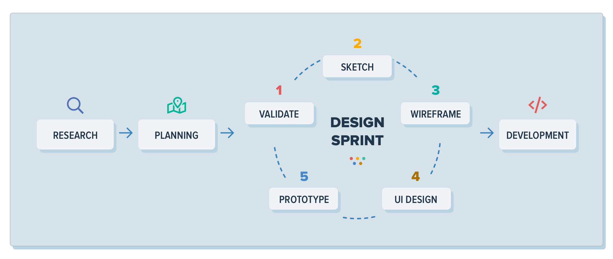
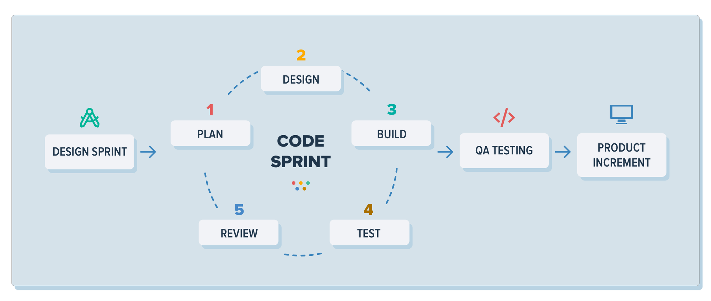
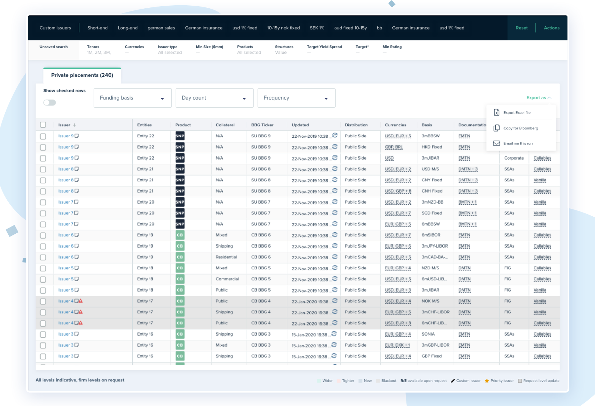
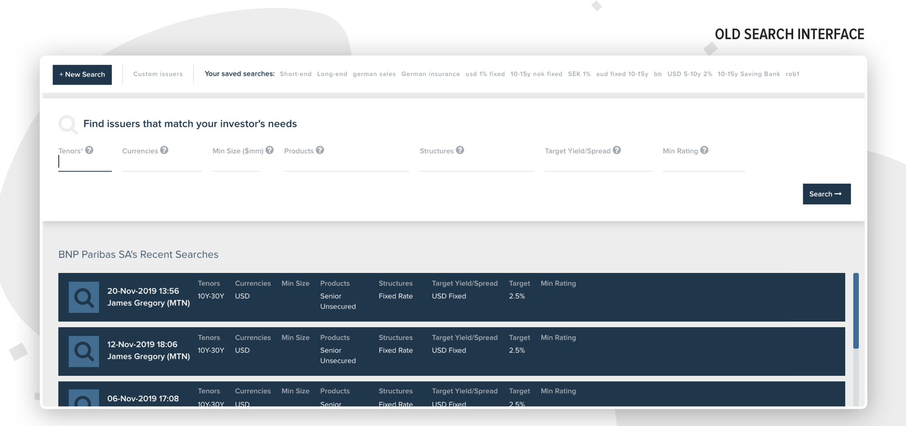
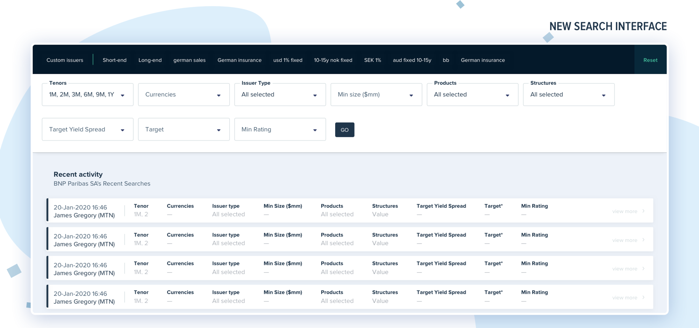
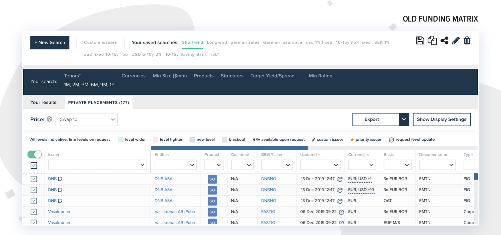
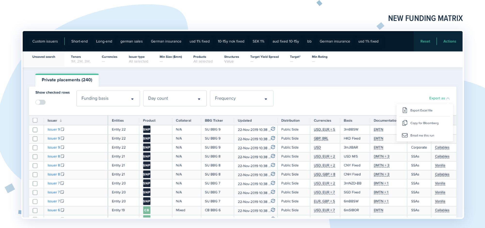
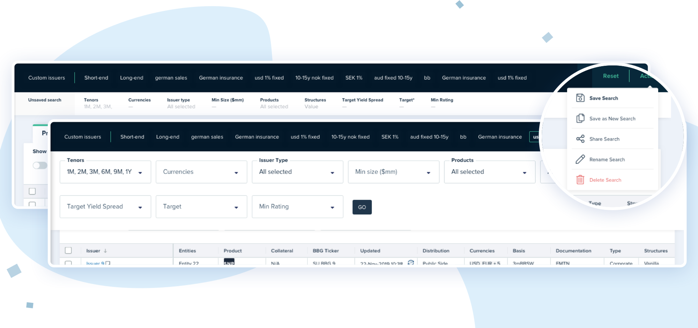

origin
the fully digital, front-to-back issuance platform that brings simplicity to the global debt capital markets
Overview
The project
Founded in 2015, Origin is the largest primary debt issuance platform in the international debt markets. The platform connects over 100 frequent borrowers and 20 major investment banks, and is used by over nearly 700 professionals working across 70 cities worldwide.
Origin’s software automates and digitises the entire bond issuance lifecycle, from pricing and origination, documentation, all the way through to listing and settlement, and supports a full range of fixed income products including bonds, MTNs, structured notes, and money market instruments such as CDs and CPs.
My role
From 2020 to 2023, I was leading the design process for the product development team. As the team’s first in-house designer, my first duty was to restructure the company's setup and processes to ensure that the product has clear value and benefits for both business and customers. The process I introduced is based on the agile methodology and integrates planning with execution, allowing our team to create a working mindset that helps us respond effectively to the changing requirements of the global debt capital markets.
Behind the scenes of Origin's design process
What we do and why we do it
Our vision for Origin is to be the data and communication layer at the centre of the global debt capital markets. One of our biggest challenges is finding the best way to bring simplicity to an industry that still relies heavily on manual processes and clunky software.
Designing and building exceptional products is foundational to solving that challenge. Our products are the most important elements of our business. But while most people focus on the “build” part, we recognise that it’s in the “design” part where the solution lies.
Design is at the heart of everything that we do, and is a foundational cornerstone of our business and our design process is how all functions come together to support the business.
So, how do we do it?
From initial concept …
Every one of our products, from our pre-trade Marketplace, to our Documentation and Post-Trade, is the result of collaboration with a group of early customers who worked with us in finding and building great solutions to real-life problems they were facing. They liked the fact that we were committed on working together with them and that initial collaboration transformed into a deep relationship that gave us a real understanding of the day-to-day work-life of the people in our industry and the challenges they face.
Once we identify what is the problem we try to solve, we must ensure that we understand it from all angles. At Origin, we’re lucky to have a multidisciplinary team, covering capital markets, product, tech and design. In order to harness these skills, we hold company-wide workshops that focus on the problem we’re seeking to solve. This aligns the team behind one goal and allows us to find a solution quicker.
From this point, we experiment with possible solutions using a Lean approach, involving rapid sketching, prototyping and getting customer feedback early and often. We explore a number of designs for each feature before deciding on the right approach. Our goal is to solve the customer problem without wasting resources on bad ideas or unnecessary code.
The final step is to validate that our proposed solution works for our customers. We do this by showing the final prototypes to our customers and getting critical feedback. If the solution is valuable to our customers, we can begin to build.
… to implementation
Once the final designs are ready, the development team breaks the work for the build into manageable increments, allowing us to quickly deliver value to our customers. Speed is a crucial element and our lean, iterative approach to design and development means that we can rapidly deliver the solutions that we’ve promised.
Everything we build must be robust. All of our code is peer-reviewed and manually tested by a Quality Assurance team for a week before any customer sees it, ensuring that the product that customers get is one they can rely on.
Once each increment reaches our customers, we make sure to get feedback so that we know we’re moving in the right direction. Even at this late stage, we’re happy to adjust our approach to ensure that we’re solving the problem in the simplest way possible. If we can make it better suited for the customer, we will adapt our design and development process along the way.
Product revamp
In January 2020 with me joining as the first in-house designer, and given the global slowdown, our team grabbed the opportunity to work on a performance upgrade of our platform.
We took a step back, and started reassessing the user experience of the main features or our platform. Our ultimate goal was to refine those flows and make our product more intuitive and user friendly, so that our users can make informed decisions faster.
The following two case studies will show how this design and development process is applied to specific parts of our product.
Case study 1
The new and improved interface
The first feature that we overhauled was our Funding Matrix.
The challenge
The Funding Matrix allows dealers (across DCM, Syndicate, and Sales) to quickly search through our database of issuers to find those seeking funding who match certain criteria (yield, spread, ratings, etc). It’s the most used feature in our Marketplace product.
Over the years, the old interface became too complex and hard to use, as new additions crammed more and more functionality into the product. As the feature evolved and we gained a better understanding of your requirements, we saw that it needed a serious rethink.
The approach
Our first step was to conduct thorough research, examining all the feedback we’ve received and analysing the usage data. We found 3 main pain points:
Performance is an issue. While we are lucky to work on high-spec Macbooks, we know you are operating on a wider range of machines and capabilities. It's important for us to design and optimise to your specifications, and speed is a priority.
The old Funding Matrix was not intuitive enough to use without quite a bit of guidance and teaching.
You need to see as many funding levels as possible on screen – as you can with tools like Excel.
After identifying the key issues, we started working from scratch on a cleaner, more intuitive user journey, that retained all the different features and functionality that make this a powerful tool.
The solution
The search interface is the most important component of the tool - as all user journeys start there. So it was only natural to begin the revamp of the user interface from there.
We didn’t make any major changes to the layout of this page, as we wanted to keep the search component on the top and the recent activity at the bottom. But, you may notice we used Material design, a visual design language developed by Google, to make the digital interface not only slicker but also easier to understand and interact with. The saved searches become the main focus of this page. Combined with a clean search form, they create an immersive experience without many distractions.
As we move forward with the redesign of our platform we will continue using Material design for a consistent and solid performance.
 Next we focused on the actual Funding Matrix view.
 We were inspired by travel search websites such as Skyscanner, which do a good job of providing a flexible search interface with potentially complex requirements. i.e. You enter your search terms, but you can then modify them with ease without having to restart your search.
The search component is positioned on the top of the Funding Matrix view, allowing you quick access to your saved searches. With a quick glance to the collapsed search panel, you can clearly see the parameters specified for this search. All actions to manage a saved search are grouped under a dropdown and are readily available when you need them.
To ensure that the Funding Matrix performed well on any computer, our development team rebuilt it from scratch using a high performance and user-friendly grid. This reduces the average loading time by more than 70%.
Along with this optimisation, a re-design of the table improves readability by allowing more results to be displayed on screen. The table legend is fixed to the bottom of the page so the table will be higher up the page. We also moved the grid’s display settings (such as filtering rows or hiding columns) to the most intuitive place: the column headers themselves.

At every step along the way we consulted with our users, collecting valuable feedback to ensure the product meets real user needs. We had to go back to the whiteboard many times but this helped us improve and create a feature that has true value for our customers. But the journey had only just begun!
The redesign of the Funding Matrix was the result of careful study and observation of user behaviour. The response to our Beta version has been overwhelmingly positive, both in terms of updated user experience and performance (loading speed).
Once the first version was deployed on the live platform, we kept testing regularly the new functionality and kept making constant, incremental improvements to ensure that it continued to meet our clients’ expectations.
Case study 2
Soft launch & Continuous refinement
Two years ago, Euromoney Magazine profiled our foray into the next stage of the bond issuance lifecycle, as we started building this feature. Last year, we successfully demonstrated the success of the product via the first fully digitally issued bond, a groundbreaking (and award winning) transaction between Vasakronan and Citi.
Since then, we’ve been busy, executing 4 more transactions across both Europe and Asia, and continuously refining, updating, and improving the feature.
And finally, we announced the penultimate step, as we “soft-launched” Origin Documentation to a selected group of 11 Dealers and 16 Issuers, before a planned wider release to all our customers afterwards.
What is a Soft Launch?
The soft launch is a concept that’s widely used in tech. Unlike a “proof of concept,” or a “pilot,” a soft-launch is a full release of the product in a live, real-life environment, rather than in a sandbox or a highly choreographed test. But the release is staggered to a smaller group of customers initially, before a full release later.
This approach allows us to release the product and observe how our customers use it (and break it!) in real life, giving us much more insightful feedback than you typically get in a pilot. It means that when the product is finally fully released, we can be confident that it has been stress-tested by real life situations.
Continuously Refining
At Origin, we like to think we have a strong culture of continuous improvement. We’re never satisfied with V1, and we’re rarely satisfied with V2 or V3.
So how has the Documentation product improved in the last year? The five live transactions we’ve completed over the past 12 months have given us invaluable feedback to work from. These comprise 2 major categories:
Architecture: We have revamped the architecture in the back-end of our Termsheet Generator to be much more flexible than it was previously. This allows us to support many more flavours of transactions and additional functionality.
User Experience: As we have done with our Marketplace earlier in the year, we have completely redesigned the user experience and user flow of our Documentation tool. It’s not easy to create a workflow tool that brings together multiple users, across multiple teams, across multiple institutions. It’s even harder to create a product that is a joy to use and that becomes habit-forming. Our culture of continuous improvement, and relentless customer testing has helped us overhaul the UX to be much slicker, faster, and better.

Building on our Customer Footprint
Digitising very manual workflows isn’t easy. But we are privileged to have such a wide, diverse, and deep pool of customers to draw upon in order to get feedback.
As our Marketplace is now used by over 20 Dealers and nearly 90 Issuers globally, it has given us invaluable insights into how the market operates, and how users behave. Each time we build a new feature, large or small, we immediately share it with these customers for feedback. We’ve been keenly observing and absorbing these insights over the past 2 years when we first embarked on revamping our platform.
Our deep customer base has also put us in a strong position to recruit our soft launch participants.
No product gets off the ground purely “because of the tech.” It’s crucial to solve the adoption problem, to figure out a way to ensure users will actually use the tool, repeatedly, and habitually. Our journey has been long and methodical, but we believe that our strategy of prioritising and recruiting clients first is what will give us the best chance for long term success.
And so we are forever grateful to our clients who have supported us with their time, energy, and feedback over the many years.